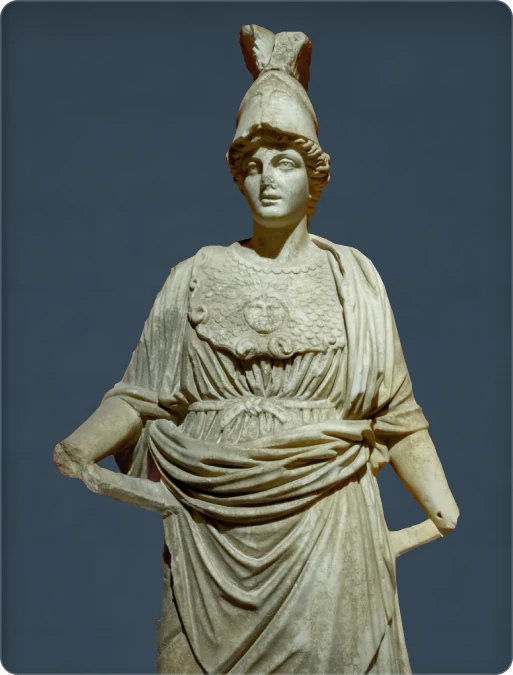

Athéna

Un casque et une égide pour reconnaître Athéna
Le casque et l’égide ornée d’une tête de Gorgone permettent de reconnaître Athéna. Sur sa poitrine, les écailles de cette protection contrastent avec les plis du vêtement rassemblé à la taille. La sculpture photographiée correspond à l’Athéna de Perge, conservée au musée d’Antalya. C’est une œuvre d’époque romaine représentant la déesse grecque.
Époque romaine · marbre · provenance : Perge · Musée d’Antalya, Türkiye
Vues de référence : Athéna de Perge →
Crédit photographique
Photo : Yusuf Dündar / Unsplash
Reconnaître la figure à ses attributs
Commencez par la silhouette du casque, puis descendez vers l’égide, la protection que la figure porte sur sa poitrine. La tête de Gorgone forme un petit motif au centre de l’égide. Regardez successivement les deux visages, celui de la déesse et celui de la Gorgone. Leur différence d’échelle aide à repérer le second dans l’image. Ensemble, le casque et l’égide donnent des indices plus précis sur l’identité d’Athéna que ses traits seuls.
Comparer les écailles et les plis
Sur la poitrine, les écailles reprennent une forme semblable sur une petite surface. À la taille, les plis s’étirent davantage et changent de direction. Suivez du regard une rangée d’écailles, puis un des plis du vêtement. Le premier mouvement s’arrête sur de petits reliefs rapprochés. Le second amène le regard plus loin sur le corps. Cette différence de rythme permet de distinguer les deux éléments de la tenue, même si la protection et le vêtement sont tous deux sculptés dans le marbre.
Revenir à la silhouette entière
Après avoir regardé le détail de la poitrine, revenez à l’ensemble de la figure. Le casque et la tête de Gorgone attirent d’abord le regard vers l’axe de la figure. À la taille, les plis et les directions que prennent les bras élargissent la composition. Si votre regard part plutôt des contours du vêtement, vous pouvez faire le trajet inverse et remonter vers le visage. Ces deux parcours de lecture aident à situer les attributs sur le corps et à comprendre comment le drapé organise l’image.
Situer l’œuvre et son sujet
La notice décrit une œuvre d’époque romaine qui représente une déesse grecque. La figure photographiée correspond à l’Athéna de Perge, conservée au musée d’Antalya. Ces indications répondent à des questions différentes. Le casque et l’égide renseignent sur le sujet, tandis que Perge indique la provenance et Antalya le lieu de conservation. En consultant les vues de référence, cherchez le casque, la tête de Gorgone et les plis à la taille. Les retrouver permet de comprendre sur quels détails repose la comparaison.